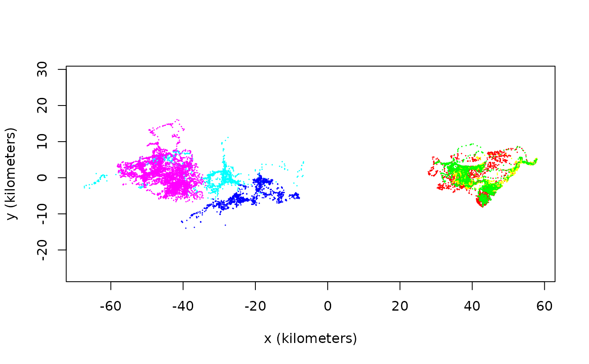

plot.telemetry.RdProduces simple plots of telemetry objects, possibly overlayed with a Gaussian ctmm movement model or a UD utilization distribution.
plot(x,y,...)
# S3 method for telemetry
plot(x,CTMM=NULL,UD=NULL,col.bg="white",cex=NULL,col="red",lwd=1,pch=1,type='p',
error=TRUE,transparency.error=0.25,velocity=FALSE,DF="CDF",col.DF="blue",
col.grid="white",labels=NULL,convex=FALSE,level=0.95,level.UD=0.95,col.level="black",
lwd.level=1,SP=NULL,border.SP=TRUE,col.SP=NA,R=NULL,col.R="green",legend=FALSE,
fraction=1,xlim=NULL,ylim=NULL,ext=NULL,units=TRUE,add=FALSE,...)
# S4 method for list
zoom(x,...)
# S4 method for telemetry
zoom(x,fraction=1,...)
# S4 method for UD
zoom(x,fraction=1,...)telemetry or UD object.
Unused option.
Optional Gaussian ctmm movement model from the output of ctmm.fit or list of such objects.
Optional UD object such as from the output of akde or list of such objects.
Background color
Relative size of plotting symbols. Only used when error=FALSE, because error=TRUE uses the location-error radius instead of cex.
Color option for telemetry data. Can be an array or list of arrays.
Line widths of telemetry points.
Plotting symbol. Can be an array or list of arrays.
How plot points are connected. Can be an array.
Plot error circles/ellipses if present in the data. error=2 will fill in the circles and error=3 will plot densities instead. error=FALSE will disable this feature.
Transparency scaling for erroneous locations when error=1:2. trans=0 disables transparancy. Should be no greater than 1.
Plot velocity vectors if present in the data.
Plot the maximum likelihood probability density function "PDF" or cumulative distribution function "CDF".
Color option for the density function. Can be an array.
Color option for the maximum likelihood akde bandwidth grid. col.grid=NA will disable the plotting of the bandwidth grid.
Labels for UD contours. Can be an array or list of arrays.
Plot convex coverage-area contours if TRUE. By default, the highest density region (HDR) contours are plotted.
Confidence levels placed on the contour estimates themselves. I.e., the above 50% core home-range area can be estimated with 95% confidence via level=0.95. level=NA will disable the plotting of confidence intervals.
Coverage level of Gaussian ctmm model or UD estimate contours to be displayed. I.e., level.UD=0.50 can yield the 50% core home range within the rendered contours.
Color option for home-range contours. Can be an array.
Line widths of UD contours.
SpatialPolygonsDataFrame object for plotting a shapefile base layer.
Color option for shapefile polygon boundaries.
Color option for shapefile polygon regions.
Background raster, such as habitat suitability.
Color option for background raster.
Plot a color legend for background raster.
Quantile fraction of the data, Gaussian ctmm, or UD range to plot, whichever is larger.
The x limits c(x1, x2) of the plot (in SI units).
The y limits c(y1, y2) of the plot (in SI units).
Plot extent alternative to xlim and ylim (see extent).
Convert axes to natural units.
Setting to TRUE will disable the unit conversions and base layer plot, so that plot.telemetry can be overlayed atop other outputs more easily.
Additional options passed to plot.
Confidence intervals placed on the ctmm Gaussian home-range contour estimates only represent uncertainty in the area's magnitude and not uncertainty in the mean location, eccentricity, or orientation angle. For akde UD estimates, the provided contours also only represent uncertainty in the magnitude of the area. With akde estimates, it is also important to note the scale of the bandwidth and, by default, grid cells are plotted with akde contours such that their length and width matches that of a bandwidth kernels' standard deviation in each direction. Therefore, this grid provides a visual approximation of the kernel-density estimate's ``resolution''. Grid lines can be disabled with the argument col.grid=NA.
Returns a plot of \(x\) vs. \(y\), and, if specified, Gaussian ctmm distribution or UD.
akde
UD plots also come with a standard resolution grid.
zoom includes a zoom slider to manipulate fraction.
If xlim or ylim are provided, then the smaller or absent range will be expanded to ensure asp=1.
akde, ctmm.fit, plot, SpatialPoints.telemetry.
# Load package and data
library(ctmm)
data(buffalo)
# Plot the data
plot(buffalo,col=rainbow(length(buffalo)))
#> DOP values missing. Assuming DOP=1.
#> DOP values missing. Assuming DOP=1.
#> DOP values missing. Assuming DOP=1.
#> DOP values missing. Assuming DOP=1.
#> DOP values missing. Assuming DOP=1.
#> DOP values missing. Assuming DOP=1.
